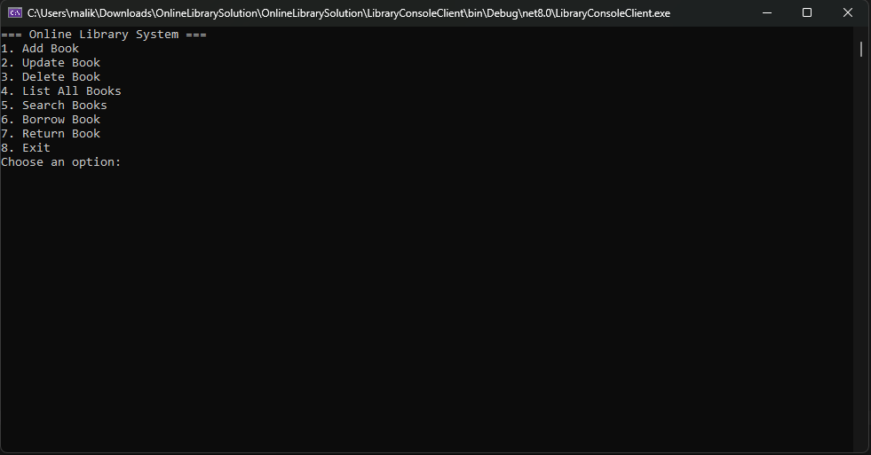
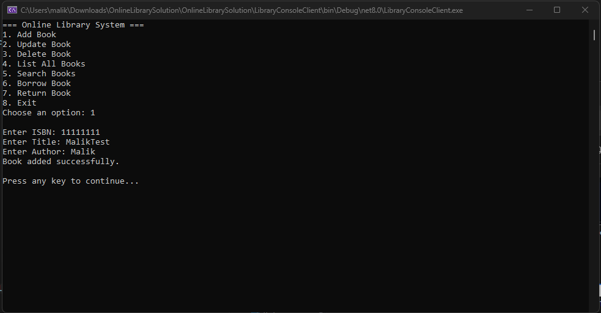
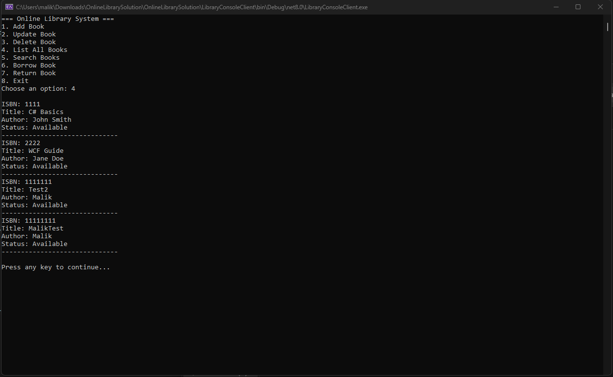
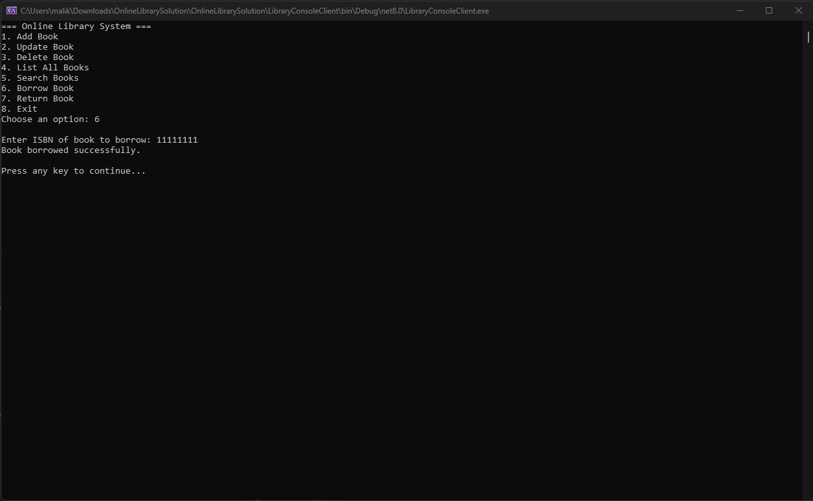
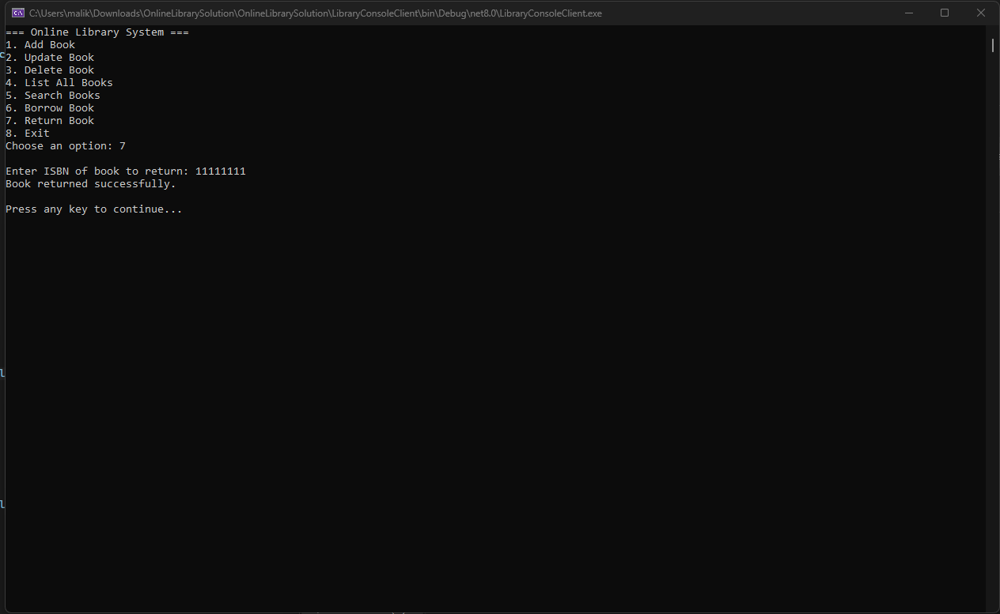
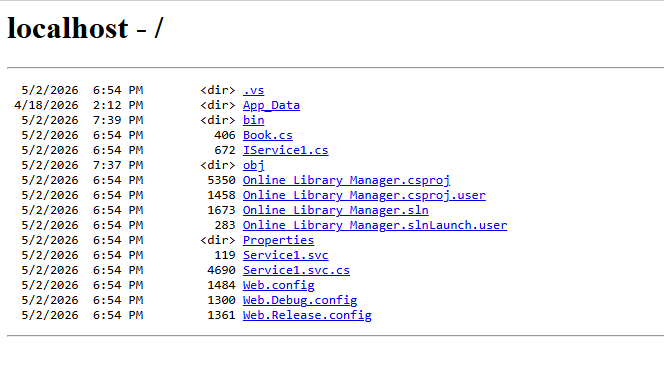

About the Project
The WCF Online Library System is a C# project built using Windows Communication Foundation (WCF) to demonstrate service-oriented architecture. The project consists of two parts: a WCF Service hosted locally that exposes library operations as a web service, and a Console Client that connects to the service and allows the user to interact with the library through a menu-driven interface.
The service manages a collection of books identified by ISBN, supporting full CRUD operations as well as borrowing and returning books. The console client communicates with the WCF service over a local endpoint, demonstrating how service-oriented applications separate business logic from the client interface.
Technologies Used
Key Features
- WCF Service exposing library operations through a service contract interface
- Add Book — add a new book by ISBN, title, and author
- Update Book — modify an existing book's details by ISBN
- Delete Book — remove a book from the library by ISBN
- List All Books — display all books with their ISBN, title, author, and availability status
- Search Books — find a specific book by ISBN or title
- Borrow Book — mark a book as borrowed by ISBN
- Return Book — mark a borrowed book as returned by ISBN
Screenshots

Console Client — main menu with all available options

Add Book — enter ISBN, title, and author

List All Books — displays all books with status

Borrow Book — mark a book as borrowed by ISBN

Return Book — mark a borrowed book as returned

WCF Service hosted locally — service directory showing all files
Sample Code
WCF Service contract and implementation for the library operations:
// IService1.cs — WCF Service Contract
[ServiceContract]
public interface ILibraryService
{
[OperationContract]
string AddBook(string isbn, string title, string author);
[OperationContract]
string BorrowBook(string isbn);
[OperationContract]
string ReturnBook(string isbn);
[OperationContract]
List<Book> GetAllBooks();
[OperationContract]
string DeleteBook(string isbn);
}
// Service1.svc.cs — WCF Service Implementation
public class LibraryService : ILibraryService
{
private static List<Book> books = new List<Book>();
public string AddBook(string isbn, string title, string author)
{
books.Add(new Book { ISBN = isbn, Title = title,
Author = author, IsAvailable = true });
return "Book added successfully.";
}
public string BorrowBook(string isbn)
{
var book = books.FirstOrDefault(b => b.ISBN == isbn);
if (book == null) return "Book not found.";
if (!book.IsAvailable) return "Book is already borrowed.";
book.IsAvailable = false;
return "Book borrowed successfully.";
}
public string ReturnBook(string isbn)
{
var book = books.FirstOrDefault(b => b.ISBN == isbn);
if (book == null) return "Book not found.";
book.IsAvailable = true;
return "Book returned successfully.";
}
}